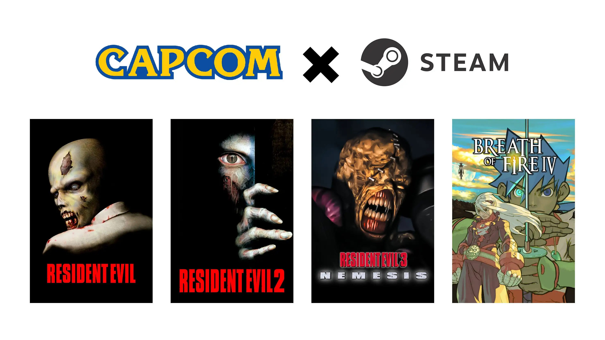

El mes de abril ha arrancado con una agradable sorpresa para todos los usuarios de Steam, y es que el
gran 2026 de Capcom sigue afianzándose con la llegada de cuatro clásicos de la compañía de Osaka a la
plataforma de videojuegos.
Se trata de las versiones para PC de los tres primeros Resident Evil y Breath of Fire IV, clásicos de
PlayStation 1 del survival horror y el JRPG que llegan a Steam dos años después de su relanzamiento en
GOG. Títulos que salieron en PC a finales de los 90 y principios de los 2000, pero que no se podían
adquirir con facilidad en la actualidad, algo que cambió en 2024 cuando GOG comenzó a vender las tres
primeras entregas.
La llegada de Resident Evil 1, Resident Evil 2 y Resident Evil 3: Nemesis a Steam ha sido todo un éxito,
logrando que los clásicos de Capcom estén entre los juegos más vendidos de la plataforma, y no es para
menos, pues hasta el 15 de abril tienen un 50 % de descuento, pudiendo adquirir cada título por 4,99 €,
mismo precio para Breath of Fire IV.

Volver